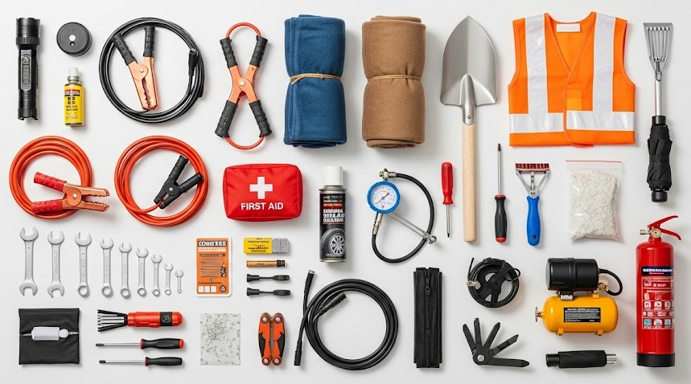

Vehicle Emergency Kit for Any Season
Objective
Build a vehicle kit that keeps people warm, hydrated, visible, and communicating during breakdowns or closures in any season. Your priorities are safety off the traffic lane, shelter from weather, and a plan to signal or self-recover.
Scenario (Example)
Example: Highway closed by ice after dark. You have half a tank of fuel, two passengers, weak cell coverage, and temperatures dropping below −10°C. Tow ETA is “unknown.”
Kit Layout (By Function)
- People: wool blankets or sleeping bags, spare hats/gloves, chemical warmers, 3 L water/person, high-calorie bars, electrolyte packets.
- Shelter/Heat/Cool: wool blanket or bivy per seat, reflective windshield cover (insulation), small tarp + cord to rig shade in summer.
- Comms/Light: phone charger (12V + USB-C), power bank, FRS/GMRS handheld (if convoying), AM/FM radio, headlamps (one per seat), road flares or LED beacons, triangle reflectors.
- Recovery/Repair: full-size spare (or space-saver inflated), jack + base plate, lug wrench, aerosol tire sealant, plug kit + 12V compressor, jump starter, tow strap with rated hooks, duct tape, zip ties, basic tool roll.
- Admin/Safety: high-vis vests, nitrile gloves, first-aid kit (pressure bandage, gauze, meds), paper map, cash, copy of insurance/roadside numbers.
Placement Map
- Driver door pocket: headlamp, high-vis vest, window breaker/seatbelt cutter.
- Under front seat: first-aid kit, nitrile gloves.
- Trunk left: tool roll, jack, base plate, plug kit, compressor.
- Trunk right: blankets/bivies, water, food, tarp.
- Top access: triangles/flares be the first thing you reach.
Step-by-Step: Breakdown on Shoulder
- Position & protect (1 min). Pull as far off the lane as possible; wheels turned away from traffic; hazards on.
- Mark the scene (2–3 min). Put on a high-vis vest. Place a triangle 10 m behind in city, 30–50 m on highway. In rain/ice, increase distance.
- Assess & decide (2 min). Flat? Fuel? Battery? Temperature? Time to service? Decide: fix now or shelter-in-car and call for help.
- Comms (ongoing). Send exact location: mile marker, nearest exit, GPS lat/long. Text rather than call to save battery. If radios in a convoy, agree on a channel now.
- If fixing a flat (10–15 min). Jack on solid base (use a wood block), chock opposite tire, loosen lugs before lifting, keep body out from lane side. Re-torque after 50–100 km.
- If staying put (overnight). Crack a downwind window 1 cm for ventilation. Run engine 10–15 minutes each hour for heat after checking the tailpipe is clear of snow. Rotate watch/sleep schedule.
Seasonal Modules
- Winter: shovel, traction boards or sand, candle-in-a-can (heat source with venting), insulated bottle, extra socks.
- Summer: extra 4–6 L water, electrolyte tabs, wide-brim hat, reflective tarp for shade, sunscreen.
- Monsoon/Wet: rain ponchos, microspikes for slick shoulders, larger base plate for the jack.
Real Example
A family stranded during a mountain pass closure rotated engine heat 15 minutes/hour, placed triangles 50 m and 100 m back due to curves, and shared a thermos of hot cocoa from a small stove in the back (window cracked, CO alarm on batteries). They slept in hats and bivies and were fine when the plows reopened at 05:30.
Checklist
- Light per seat + spare batteries
- Triangles/flares; high-vis vests
- Water 3 L/person + electrolytes
- Blankets/bivies; hats/gloves
- Plug kit + compressor; jump starter; tow strap
Contingencies
- Tailpipe buried: Dig it out before running engine; risk of CO poisoning.
- No cell service: Write a note (time, names, plate, direction of travel) and leave on dash. If you must walk out, go in daylight on the opposite side of guardrail, wearing high-vis.
- Heat illness risk: Shade first, then water and electrolytes. Rest during solar noon.
After-Action
Replace used items immediately and log times: how long the plug kit took, how much fuel heat cycles consumed, what you wished you’d had. Adjust the kit for your climate.
← Previous | All Articles | Next →